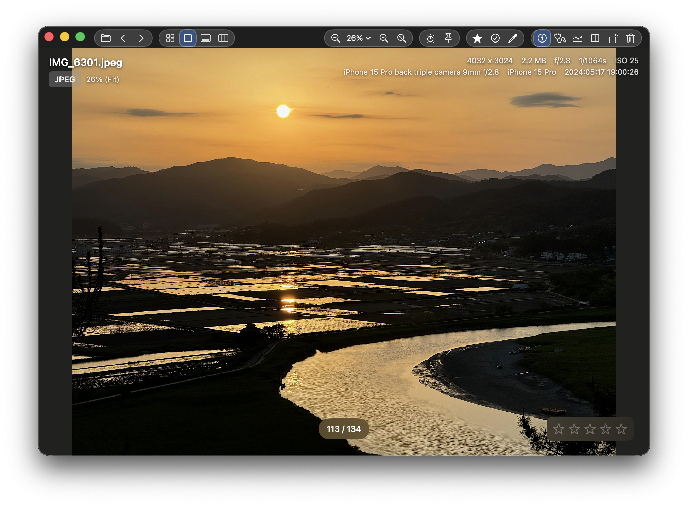
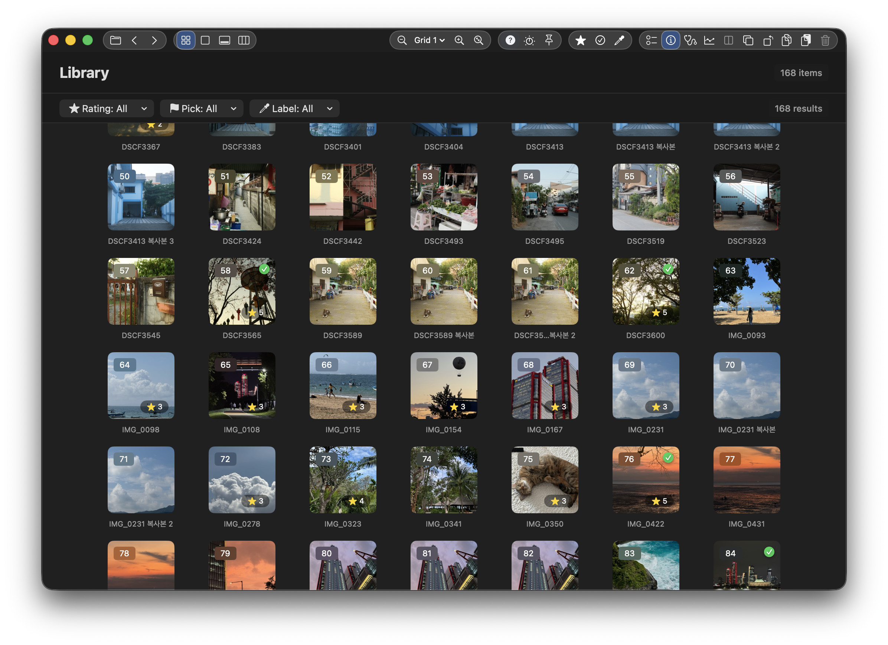
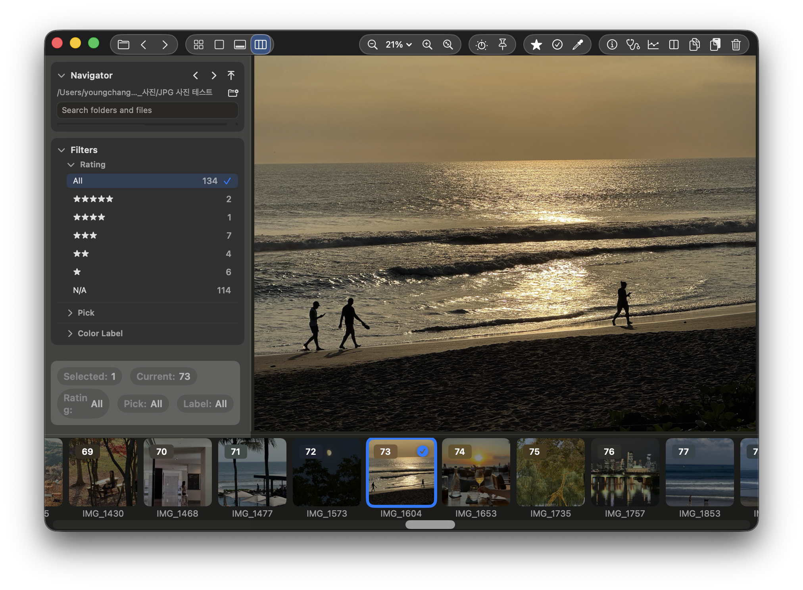
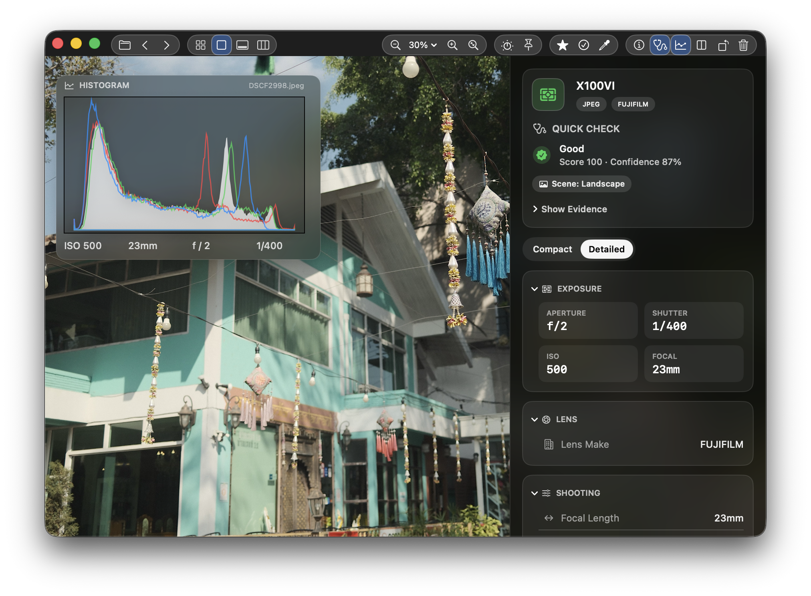

1. 빠르고 간결한 기본 사진 뷰어
1. A fast, minimal photo viewer
복잡한 세팅 없이 바로 열고, 필요한 정보만 깔끔하게 보여줍니다. 사진을 작업처럼 느끼지 않게, 가볍고 빠른 감상 흐름을 유지합니다. (W, 0/9)
Open instantly with no setup, and see only what matters. SnapView keeps
viewing smooth and enjoyable, not heavy or distracting. (W, 0/9)

2. 그리드로 수백 장을 한 번에 훑기
2. Scan hundreds at a glance with Grid
많이 찍은 날에도 부담 없이 훑을 수 있습니다. 한 화면에서 전체를 보고, 원하는 컷으로 바로 이동해 흐름을 끊지 않습니다. (Q, =/-)
Even after a big shooting day, Grid stays easy to scan. See everything at
once and jump to the shot you want without breaking flow. (Q, =/-)

3. 필름스트립으로 흐름 끊김 없이 쭉 보기
3. Stay in flow with Filmstrip
가장 익숙한 방식으로 한 장씩 빠르게 넘기며 전체 흐름을 확인합니다. 필요한 컷을 부담 없이 고르는 데 집중할 수 있습니다. (E)
Use the classic browsing flow to move quickly frame by frame. It helps you
stay relaxed and focused on keeping the shots you like. (E)

4. 정리가 필요해지는 순간에만, 간단하게
4. Organize only when you need to
정리가 필요할 때만 별점(1~5)과 플래그(P/X), 컬러 라벨(Cmd+1~6)을 사용해 간단히 정리하세요. 필수 기능만 남겨서 오래 머물지 않아도 됩니다.
When you need to organize, use simple ratings (1~5), flags (P/X), and labels (Cmd+1~6). Keep only
what matters and move on quickly.

5. 판단을 돕는 스마트 보조 도구들
5. Smart Tools to Assist Your Judgment
가장 좋은 컷을 단번에 고르고 완전히 동일한 중복 파일은 덜어내세요. AI 분석(눈감음/초점 파악 등, K), 다중 비교(C), 중복 정리 도구(Cmd+Shift+D)가 당신의 선택을 빠르고 정확하게
만들어 줍니다.
Pick the best shot instantly and strip away exact duplicates. AI analysis (K),
multi-compare (C), and duplicate cleanup tools (Cmd+Shift+D) make your choices fast and precise.
